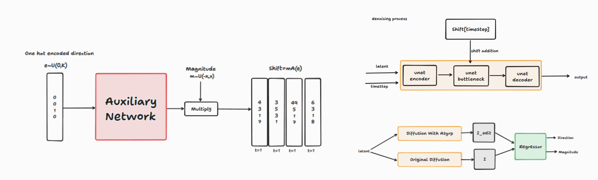

About Me
I am an MSc student in Computer Science at Bilkent University, advised by Assoc. Prof. Aysegul Dundar. I work on controllable generative models and 3D reconstruction. My research interests center on understanding how generative models represent geometry, motion, and interactions, and how their internal representations can be leveraged for more controllable and consistent generation and editing.
Publication
* indicates equal contribution.
Related Course Projects

Exploring whether interpretable editing directions can be discovered without supervision in the h-space of diffusion models.
Investigating how hindsight relabeling can improve sample efficiency for Soft Actor-Critic in goal-conditioned tasks.
News
Our paper was accepted to EuroGraphics 2026.
Teaching & Academic Service
Academic Service
Reviewer
Teaching
Teaching Assistant / Course staff.
Teaching Assistant (Course Staff) • Assistant Coordinator.
Teaching Assistant (Course Staff) • Assistant Coordinator.